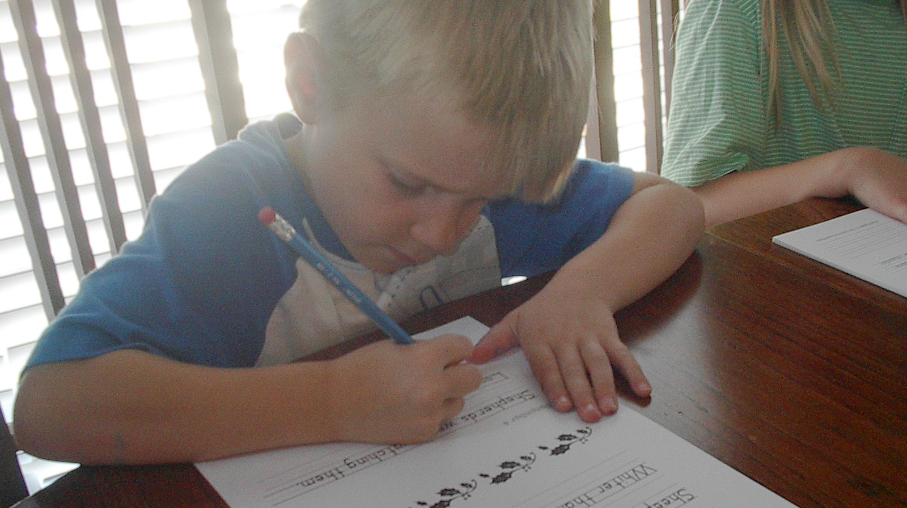

Copywork made easy!
Choose from a selection of print and cursive copybooks in three different handwriting fonts, available in both paperback and PDF versions.
Available Now:
History-based copybooks, which include poetry and literature selections from each time period, from the ancient, medieval, and early modern periods. Also available are copybooks for Advent.
Free Download!
The Medieval Copybook - HWT Cursive - has been revised, with a larger font size. Try it for free!
Why Copywork?
Copywork has many benefits, including handwriting practice, practice with punctuation and sentence structure, and exposure to well-crafted poetry and prose. These books give the added benefit of reinforcing the topics you are already studying providing additional insights into the people and cultures of the various time periods with Scriptures, stories, proverbs, laws, and other primary sources.
The purpose of copywork is to get into the child’s visual (and motor) memory the look and feel of a sentence that is correctly composed, and properly spelled, spaced, and punctuated.
The earliest practice in writing proper for children of seven or eight should be, not letter-writing or dictation, but transcription, [i.e., copywork], slow and beautiful work.